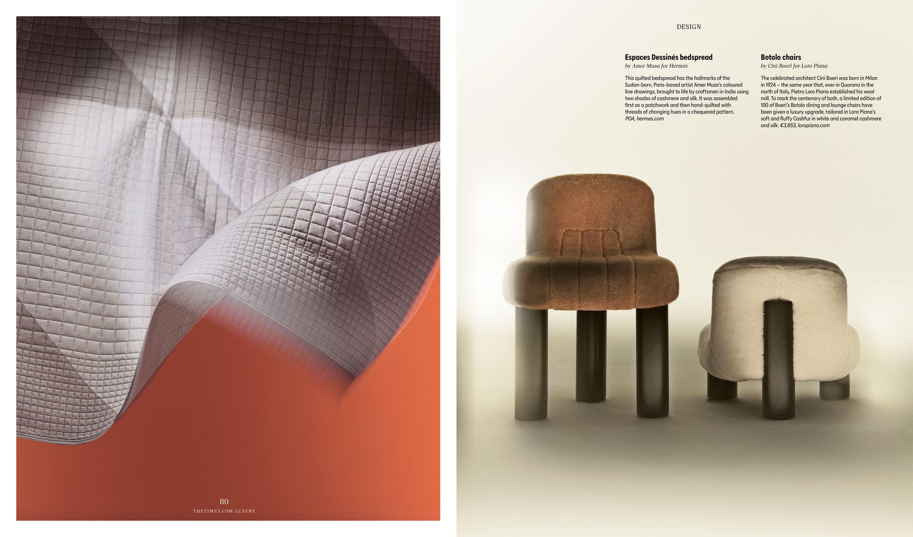

Drawings, exhibitions and collaborations — tracing how simple lines and colours travelled from a childhood game to the walls of Paris, the ateliers of Hermès, and international stages.
Dessins, expositions et collaborations — comment des lignes simples et des couleurs franches ont voyagé d'un jeu d'enfance aux murs de Paris, aux ateliers d'Hermès et aux scènes internationales.
رسومات ومعارض وتعاونات — كيف سافرت الخطوط البسيطة والألوان الجريئة من لعبة طفولة إلى جدران باريس وورشات Hermès والمنصات الدولية.
2017
Moves to Paris and begins drawing regularly in public libraries and small notebooks. The first circles, lines and letters appear as a private way to breathe and organise memories.
2017
S'installe à Paris et commence à dessiner régulièrement dans les bibliothèques publiques et de petits carnets. Les premiers cercles, lignes et lettres deviennent une façon intime de respirer et de mettre de l'ordre dans les souvenirs.
2017
ينتقل إلى باريس ويبدأ الرسم بانتظام في المكتبات العامة وفي دفاتر صغيرة. تظهر أولى الدوائر والخطوط والحروف كطريقة شخصية للتنفس وترتيب الذكريات.
2020
A series of works inspired by childhood nights spent counting stars in Sudan. Constellations of dots and lines become one of the central visual languages of the practice.
2020
Une série de dessins inspirés des nuits d'enfance passées à compter les étoiles au Soudan. Des constellations de points et de lignes deviennent l'un des langages visuels centraux de la pratique.
2020
سلسلة من الأعمال المستوحاة من ليالي الطفولة تحت السماء في السودان. تتحول تجمعات النقاط والخطوط إلى أحد اللغات البصرية الأساسية في الممارسة الفنية.
2022
HOPE — first public presentation of the work in Paris. A landmark encounter with art lovers and professionals that opens the door to future collaborations.
2022
HOPE — première présentation publique du travail à Paris. Une rencontre décisive avec des amateurs d'art et des professionnels qui ouvre la voie aux collaborations futures.
2022
HOPE — أول عرض عام للأعمال في باريس. لقاء حاسم مع محبي الفن والمهنيين يفتح الباب أمام التعاونات المستقبلية.
2023
A Big Dream — works shown across two Paul Smith stores in Paris. The drawings enter into conversation with tailoring, colour stripes and the everyday rhythm of the city.
2023
A Big Dream — œuvres présentées dans deux boutiques Paul Smith à Paris. Les dessins entrent en dialogue avec la couture, les rayures colorées et le rythme quotidien de la ville.
2023
A Big Dream — أعمال تُعرض في متجرين لـ Paul Smith في باريس، حيث تدخل الرسومات في حوار مع الأزياء المخيطة والشرائط الملونة وإيقاع المدينة اليومي.
2024
First collaboration with Hermès, presented at Milan Design Week 2024 at La Pelota, Milan. A cashmere blanket titled Espace Dessiné — the minimal geometric language of the drawings translated into one of the world's most celebrated luxury houses.

2024
Première collaboration avec Hermès, présentée lors de la Milan Design Week 2024 à La Pelota, Milan. Un plaid en cachemire intitulé Espace Dessiné — le langage géométrique minimal des dessins traduit dans l'une des maisons de luxe les plus célèbres au monde.
2024
أول تعاون مع Hermès، يُقدَّم في أسبوع تصميم ميلانو 2024 في La Pelota، ميلانو. بطانية كشمير بعنوان Espace Dessiné — اللغة الهندسية البسيطة للرسومات تُترجم داخل إحدى أعرق دور الأزياء الفاخرة في العالم.
2024
Beginning of an ongoing collaboration with Garro Éditions, a French house working at the intersection of art and textile. The drawings move into the field of fabric and material editions.
2024
Début d'une collaboration continue avec Garro Éditions, une maison française travaillant à l'intersection de l'art et du textile. Les dessins s'inscrivent dans le champ des éditions en tissu et en matière.
2024
بداية تعاون مستمر مع Garro Éditions، دار فرنسية تعمل عند تقاطع الفن والنسيج. تنتقل الرسومات إلى مجال الإصدارات النسيجية والمادية.
2025
Returns to Milan Design Week with Hermès for a second consecutive year, presenting two new cashmere pieces at La Pelota, Milan. H Partition — a fine hand-woven cashmere throw with 24-carat gold powder applied to an ivory chevron design, evoking musical staves. Points et Plans — a large cashmere throw with hand-applied multicoloured polka dots on an ikat-woven grid, inspired by children's games.
See H Partition on hermes.com → See Points et Plans on hermes.com →
2025
Retour à la Milan Design Week avec Hermès pour la deuxième année consécutive, avec deux nouvelles pièces en cachemire présentées à La Pelota, Milan. H Partition — un plaid en cachemire tissé main avec de la poudre d'or 24 carats appliquée sur un motif chevron ivoire, évoquant des portées musicales. Points et Plans — un grand plaid en cachemire orné de points de couleur appliqués à la main sur une trame ikat, inspiré des jeux d'enfance.
Voir H Partition sur hermes.com → Voir Points et Plans sur hermes.com →
2025
عودة إلى أسبوع تصميم ميلانو مع Hermès للسنة الثانية على التوالي، بتقديم قطعتين جديدتين من الكشمير في La Pelota، ميلانو. H Partition — بطانية كشمير منسوجة يدويًا مع مسحوق ذهب عيار 24 قيراطًا مطبق على تصميم شيفرون عاجي يستحضر المدرجات الموسيقية. Points et Plans — بطانية كشمير كبيرة مزينة بنقاط ملونة متعددة مطبقة يدويًا على نسيج إيكات، مستوحاة من ألعاب الأطفال.
شاهد H Partition على hermes.com ← شاهد Points et Plans على hermes.com ←
2025 — ongoing
Continuing to develop new series in Paris — drawings that move between memory, fashion and everyday life. Circles, lines and grids carrying silence and resilience.
2025 — en cours
Poursuite du développement de nouvelles séries à Paris — des dessins qui circulent entre mémoire, mode et vie quotidienne. Cercles, lignes et grilles portant silence et résilience.
2025 — مستمر
مواصلة تطوير سلاسل جديدة في باريس — رسومات تتنقل بين الذاكرة والموضة والحياة اليومية. دوائر وخطوط وشبكات تحمل الصمت والصمود.